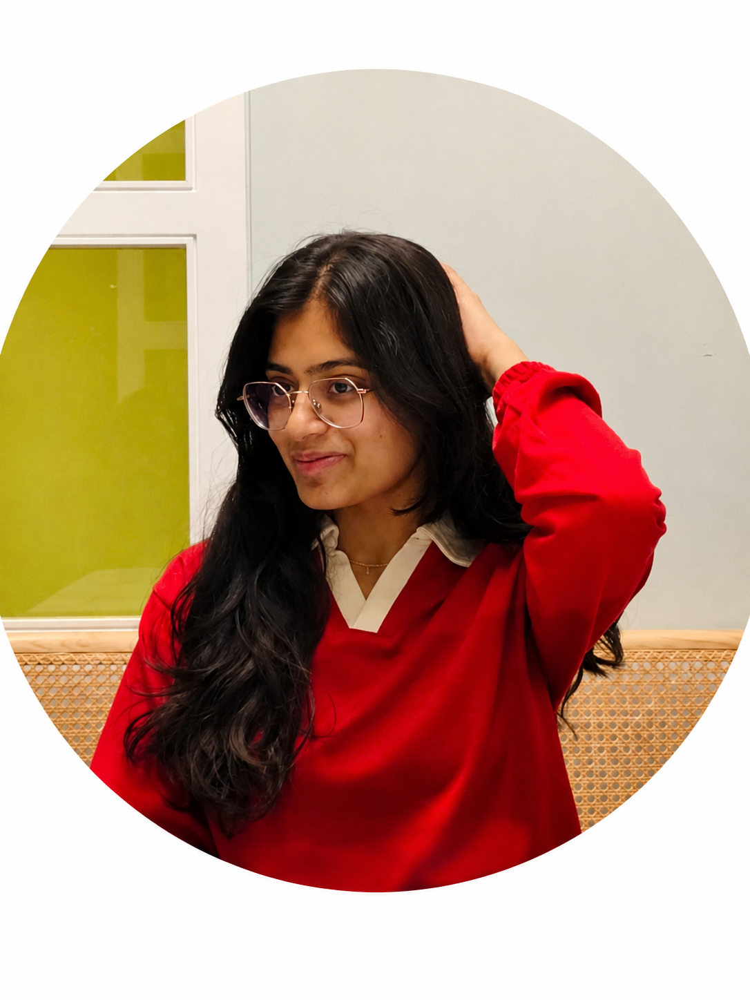
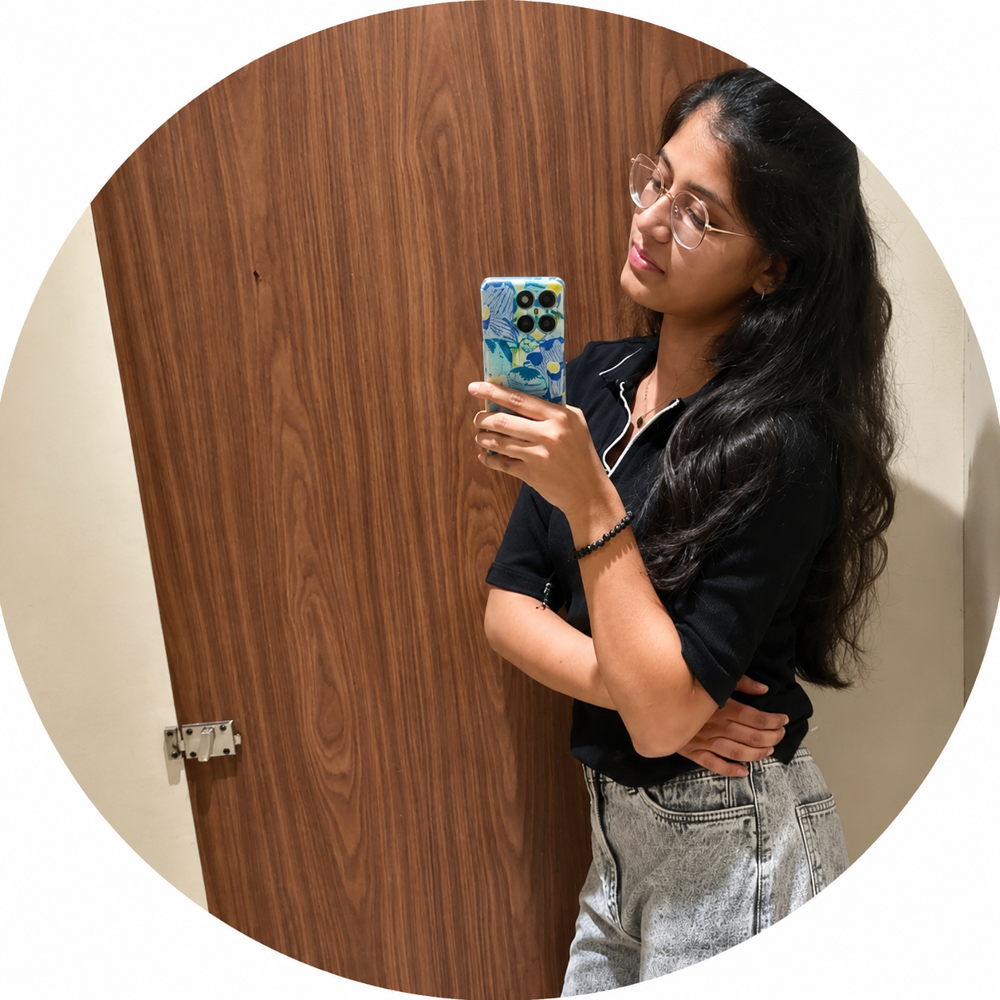
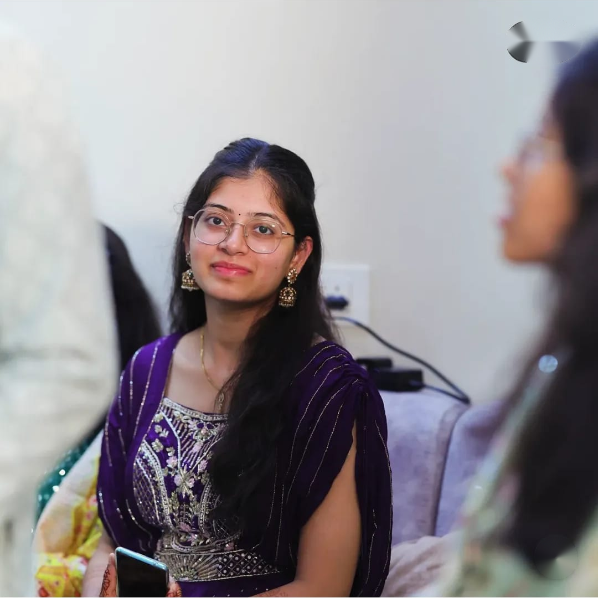
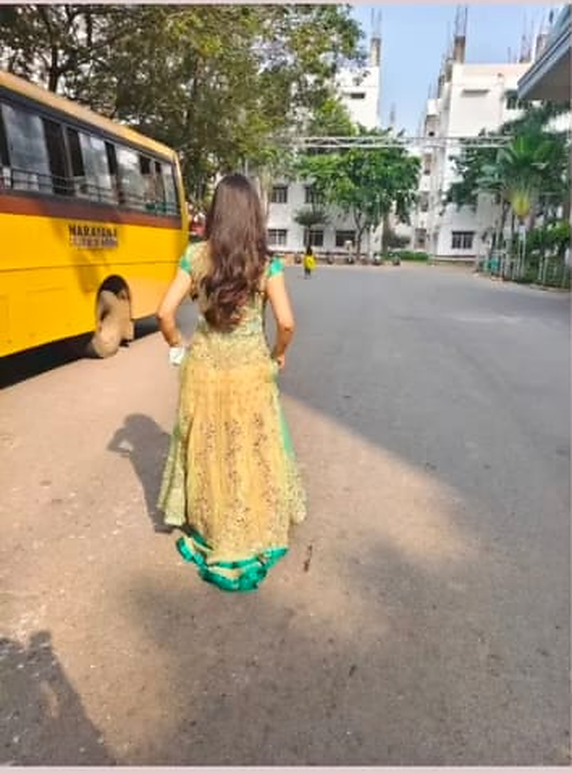
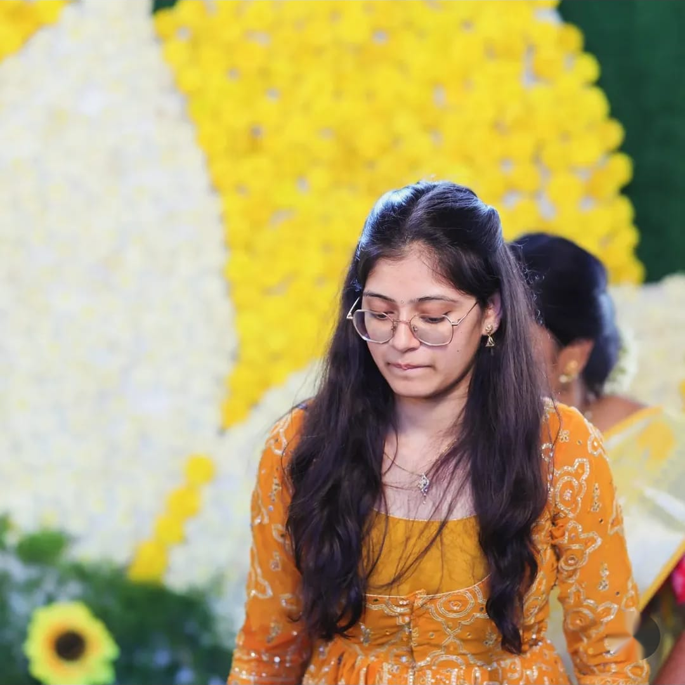
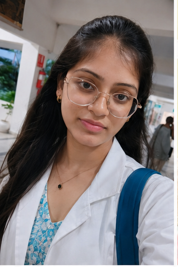
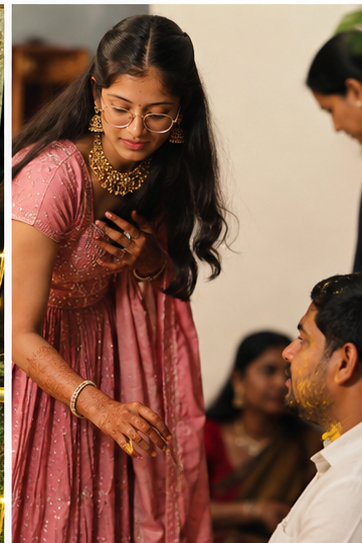
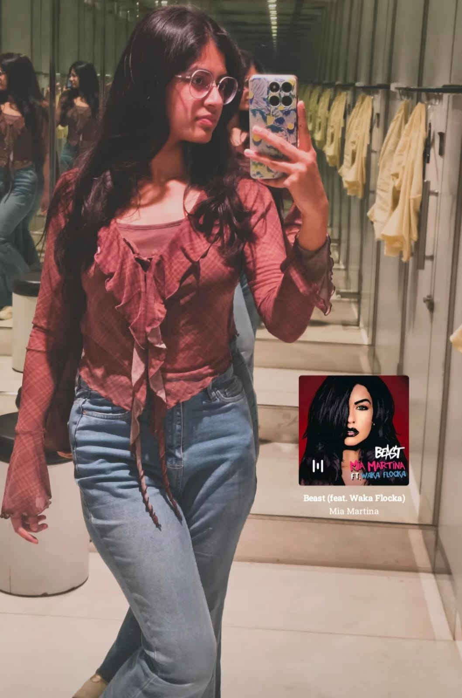

For my favorite person
My Teju ❤️
Some feelings are too special to fit into a simple message.
Where it all began
Since 6th class…
I first saw you when I was in 6th class at school.
I don't know how to explain it, but from the moment I saw you, something about you stayed with me.
Years passed, but that feeling never really disappeared.
I noticed your kindness, your innocence, your eyes… and especially your smile.

You don't have to do anything special to make me fall for you…
just be you.
Little moments
Every picture has a feeling.







One little memory
The moment I'll always remember.
We may not have a hundred memories together. After all, I've been loving you quietly, from one side.
But there is one small moment I'll always remember — at the railway station, when you and your father were trying to reach the platform, I was there to help. I gave you my hand.
Maybe to you it was just a small moment.
But to me, it became a memory worth keeping forever. ❤️
Little things I remember
Then there were your songs… 🎶
Adiga Adiga
Sometimes you sang this in college, and I quietly kept the moment in my heart.
Kanapadava Kanapadava
Another little song, another little memory that made you more special to me.
A letter I wanted you to read
Dear Teju…
Maybe you don't know how special you are to me.
I love your kindness. I love your innocence. I love your eyes. And your smile… your smile is enough to make me smile without even trying.
I may not have a long list of memories with you, but I have carried this feeling for a very long time.
I don't know what tomorrow holds, and I don't want this little surprise to ask anything from you.
I only wanted you to know what has been quietly living in my heart.
With all my heart,
Someone who has loved you since 6th class. ❤️
And finally…
Do you know what I see when I look at you?
I see the girl I've liked since 6th class…
and somehow, after all these years, my heart still chooses you.
I love you.
Forever and ever.